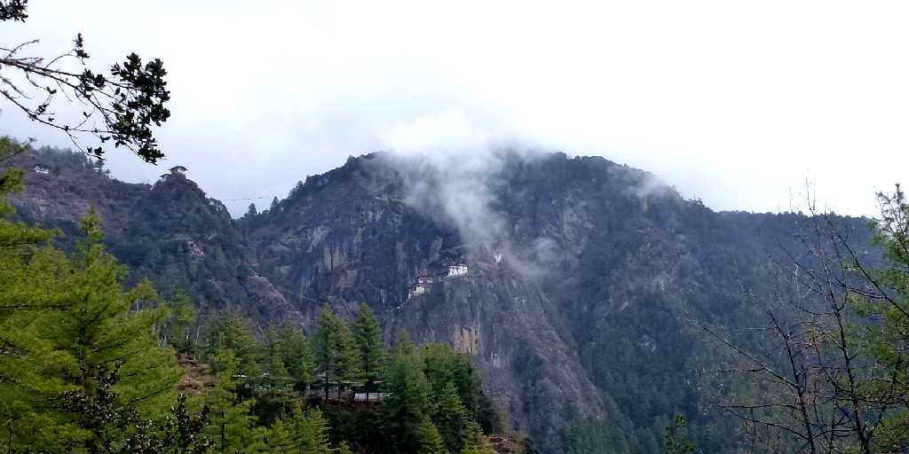
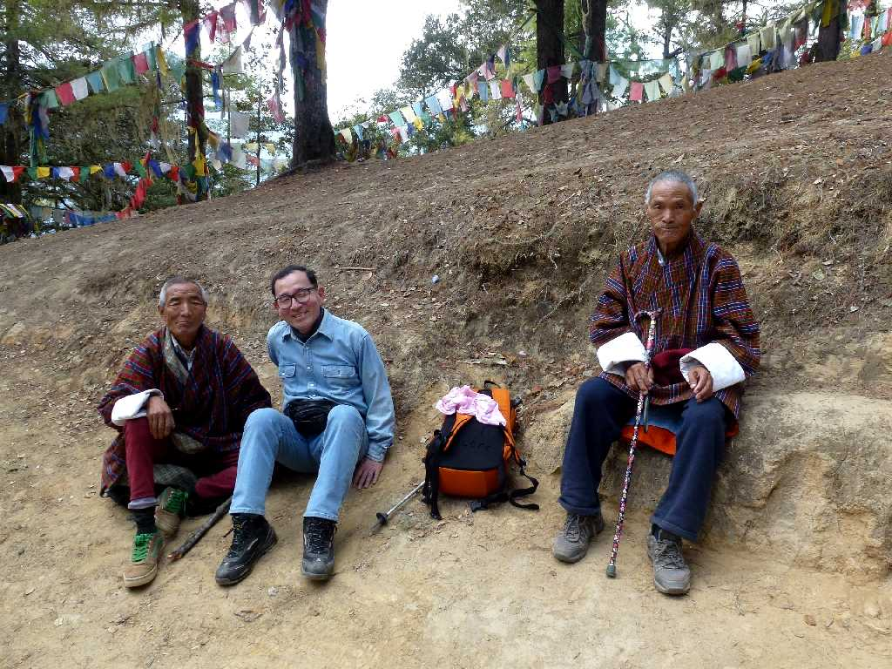
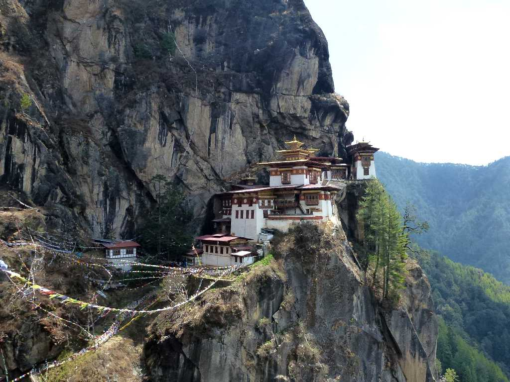
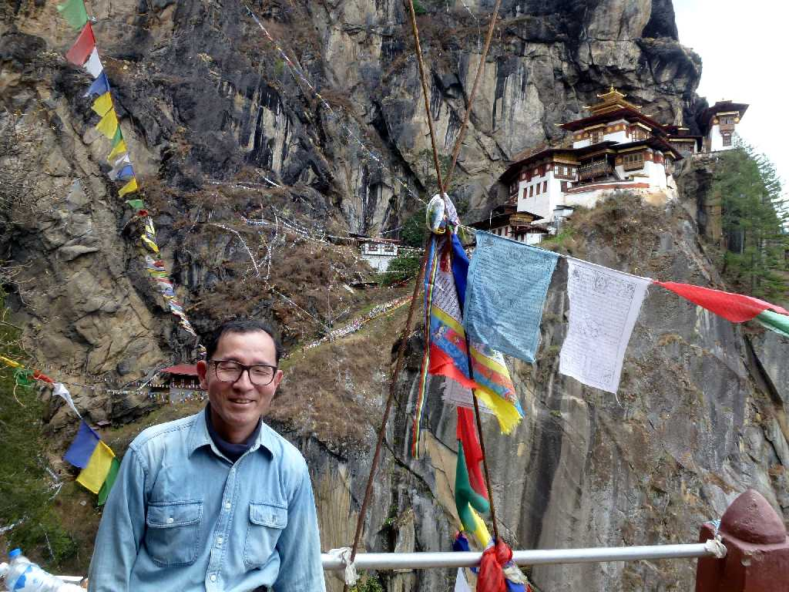
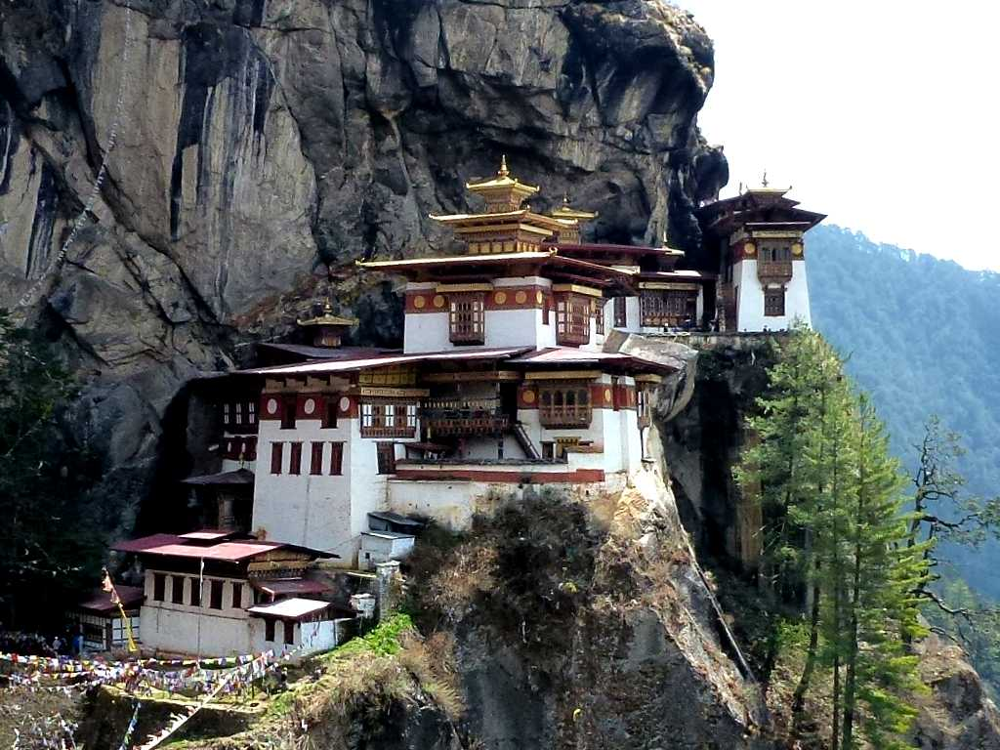

Taktsang Paro

Approach Taktsang Lhakhang

Taktsang Lhakhang Paro
８世紀にチベットに密教をもたらしチベット仏教の基礎を築いたパドマサンバヴァが洞窟で瞑想したというチベット仏教圏屈指の聖地と云われるタクツァン僧院

April 5 2012 Taktsang Lhakhang
パドマサンバヴァはブータンでは開祖グルリンポチェの名で崇拝されている

Taktsang Lhakhang
駐車場を８時半に出発し休み休み参道を登り１２時半に無事僧院に到着